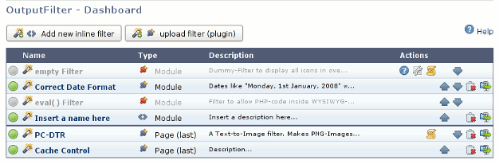
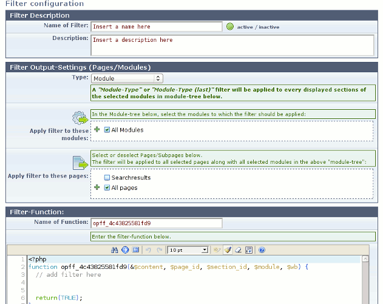
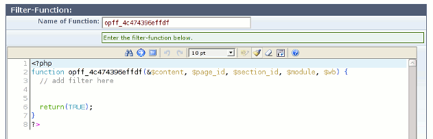
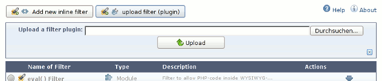

| Admin-Tool (en) | |
| Admin-Tool | |
| Admin-Tool Overview | The overview lists all installed filters, grouped by type of filter. |
| Export Filters | Use the “export”-icon in the Overview to export an existing Inline- or Plugin-Filter. |
| Install Filters | To install a new inline-filter, just press the “Add new inline filter”-Button, and insert the filter-dependent data into the form. |
The overview lists all installed filters, grouped by type of filter. The filters are executed in the same order as they appear in this list.
Active/Inactive:
The first icon indicates whether a filter is active (green) or inactive (grey). Inactive filters are never executed. Click on the icon to change the state.
Name:
This shows the name of the filter.
Click on the name to open the filter settings page.
Type:
The type of the filter. Possible types are Inline-Filter, Plugin-Filter, or Module-Filter. By clicking on the symbol you can switch between Inline- and Plugin-Filter. Some Meta-Data however is lost in this process (e.g. Version number and Author of a Plugin-Filter).
Description:
A short description.
Actions:
| Question mark | (optional) Open filter’s help pages. |
| Tool | (optional) Open filter’s advanced settings page. |
| Scroll | (optional) Open filter’s CSS-Editor. |
| Arrow up | Move filter up. |
| Arrow down | Move filter down. |
| Delete | Delete filter (Inline- and Plugin-Filter only). |
| Export | Export filter (Inline- and Plugin-Filter only). |
To install a new inline-filter, just press the “Add new inline filter”-Button, and insert the filter-dependent data into the form.
| Name of Filter | Name of the new filter. Each filter must have an unique name. |
| Description | A descriptive text about the filter, it’s functionality, or what ever. |
| Type | Type of Filter. Type can be one of Module, Module (last), Page or Page (last). See below. |
| Apply filter to these modules | Choose the modules this filter should be applied to. Please note, that this defaults to “All Modules”. You should unmark those modules the filter does not have to be applied to. |
| Apply filter to these pages | Choose the pages this filter should be applied to. Please note, that this defaults to “All Pages”. You may unmark those pages the filter does not have to be applied to. |
| Name of function | Name of the main-function of this filter. This must be the same name as the function name in the textarea below. This name must be unique among all filters. It’s safe to keep the default name. |
Types of filters:
| Module | Filters of type “Module” will be applied to the output of modules directly, i.e. to the output from module’s view.php file. |
| Module (last) | These acts like “Module”, but will be applied after all filters of type “Module”. |
| Page | Filters of type “Page” will be applied to the output of the whole page, including the template’s HTML (<head>, <body>), the Menues, Snippets and all modules in that page. |
| Page (last) | These acts like “Page”, but will be applied after all filters of type “Page”. |
Apply Filter to Modules and Pages:
Use the “Apply filter to theses ...”-tree-views to restrict the filter to only a few modules and/or pages. This way, the filter has not to be called for every single page, but only for those pages where it is needed.
Examples:
Starting with OpF Version 1.5 and WBCE 1.2 it is possible to apply filters to the backend. If yur WB-Version supports backend filtering the appropriate backend modules will appear in the tree view of the modules. In case you have a mistake in such a filter which is applied to the backend, it might become completely unusable. In that case add the following line to your global config.php of WBCE
define('WB_OPF_BE_OFF', 'off');The value doesn’t really matter, just if the constant is defined, there will no filter be applied to the backend and you have access to the dashboard again and you can fix the filters.
The Filter Function:
To actually enter a filter-function, use the EditArea.
Parameters:
| &$content | The module’s or page’s content, passed by reference. There is no need to return this variable, since all changes to this variable will be applied to the original value automatically. |
| $page_id | The actual page_id. |
| $section_id | The actual section_id. For Filters of type Page, this will always be FALSE. |
| $module | The name of the actual module. For Filters of type Page, this will always be FALSE. |
| $wb | An instance of WB’s frontend class. |
Return value:
The Filter-function must return FALSE in the case of an error, e.g. in case $content is in an unknown condition.
In all other cases, the function should return TRUE.
How to write the filter-function itself:
See Filter functions for more info about how to write your own Filter Function.
To install a Plugin-Filter just choose “Upload Filter (plugin)” and use the form to upload a Filter.
Module-Filters will be installed as part of another Module. Therefore there is no special install procedure.